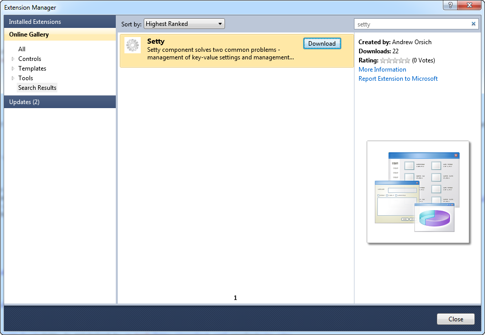
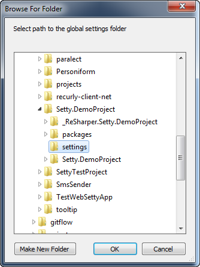
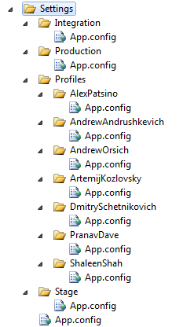

Overview
Setty was designed to help manage project key/value settings. .NET config files differ for different deployment configurations. There should be a way to manage config files for different deployment configurations. Setty chose centralized approach by generating *.config files based on some template language. Currently there is support for razor and xslt transformation engines.
Config files produced by templates which don't transform anything but actually used as trivial xml generating language. Reading of this templates is as easy as reading of plain config file. Setty can transforms two files - App.config.cshtml(xslt) and Web.config.cshtml(xslt). Result of transformation will be places to App.config and Web.config (overwriting all existent content!) Setty was designed to be used without requirement to reference any Setty assembles by your project. Thats mean that Setty can be used as built-time and management-time component. Setty was designed to be used both by web applications and desktop applications. Setty was designed to work well with any existing config management solutions, like Visual Studio Config Transformation, Web Deployment Project etc.. It's normal to use both Setty and Visual Studio Config Transformation. However, with Setty it is possible to change .NET config files without the needs to build or deploy project (thus it is not only build- or deploy-time component, it is also management-time component)
Setty with razor syntax require .net 4.0+. .net 2.0 version currently support only xslt transformation engine and has to be installed manually. See documentation below for details
Installation guide
The best way to getting started with Setty is download plugin for visual studio 2010. And install Setty in one click. Plugin will configure everything for you.
- Open Visual Studio and navigate to Tools -> Extensions Manager.
- Search in Visual Studio Online Gallery for word 'Setty' and double click to install (reload Visual Studio after installation). Or alternatively download extension Setty VS 2010 addin 
- Create new project (or open existing one), right click on it. In context menu navigate to Add -> Add Setty...

- Plugin will ask you where to create a global settings folder. Usually this folder place is on top of solution folder. 
- Congratulations! You are done. Now you can start use Setty.
Quick start
By default Setty use Razor syntax to transform Setty configs (Web.config.cshtml on above screen). Settings Folder is a simple concept of hierarchical configuration system well understood by many ASP.NET developers. The more deeper your configuration file is located the more precedence your configuration file has comparing to outer configuration files. This is a simple way to overwrite outer configuration. Here is example settings folder from real project:

To try it out navigate to the settings folder which you've specified on 4th step. There you'll find App.config file. This file is a simple storage of key/value settings. Settings Folder has only one configuration file named App.config. Content of this file is a plain .NET appSettings section.
Open it and add new key/value setting:
<?xml version="1.0" encoding="utf-8"?>
<configuration>
<appSettings>
<add key="hello" value="Hello World"/>
</appSettings>
</configuration>
After this open Setty config file (In my case it's Web.config.cshtml) and use setting as follow:
<configuration>
<appSettings>
<add key="MyFirstSetting" value="@Model["hello"]" />
...
Rebuild project and open Web.config file, there should be following result:
<configuration>
<appSettings>
<add key="MyFirstSetting" value="Hello World" />
...
With razor template template engine Model is actually Dictionary<string, string>, because of this to read some value you have to write something like this: @Model["hello"]. We chose this approach instead of dynamic model - @Model.hello, because settings usually contains some specific characters that not allowed in property names in .net.
When you start project you usually will need just read all setting into appSettings section within config file. For this purpose Setty has special property: ApplicationSettings. So to read all settings you just need following code: @Model["ApplicationSettings"].
Real world Setty config files
Below example show not only how to use Setty, but also flexibility that Setty provide by adding support of variables, conditions, whatever transformation language support.
Razor transformation engine:
<?xml version="1.0" encoding="utf-8"?>
<configuration>
<appSettings>
<add key="Name" value="@Model["Name"]" />
<add key="Email" value="@Model["Email"]" />
</appSettings>
<system.web>
<sessionState mode="SQLServer" sqlConnectionString="@Model["StateServer"]" />
</system.web>
<compilation debug="@Model["Debug"]" targetFramework="4.0" />
@if(Model["Email"] == "Compress")
{
<httpCompression>
<scheme name="gzip" dll="%Windir%\system32\inetsrv\gzip.dll" />
<dynamicTypes>
<add mimeType="text/*" enabled="true" />
...
</dynamicTypes>
</httpCompression>
}
...
</configuration>
Xslt transformation engine:
<?xml version="1.0" encoding="utf-8"?>
<xsl:stylesheet version="1.0"
xmlns:xsl="http://www.w3.org/1999/XSL/Transform"
xmlns:c="http://core.com/config">
<xsl:template match="/">
<configuration>
<appSettings>
<add key="Name" value="{c:Value('Name')}" />
<add key="Email" value="{c:Value('Email')}" />
</appSettings>
<system.web>
<sessionState mode="SQLServer" sqlConnectionString="{c:Value('StateServer')}" />
</system.web>
<compilation debug="{c:Value('Debug')}" targetFramework="4.0" />
<xsl:if test="c:Value('Compress') = 'true'">
<httpCompression>
<scheme name="gzip" dll="%Windir%\system32\inetsrv\gzip.dll" />
<dynamicTypes>
<add mimeType="text/*" enabled="true" />
...
</dynamicTypes>
</httpCompression>
</xsl:if>
...
</configuration>
</xsl:template>
</xsl:stylesheet>
.setty file
Setty use .setty file to locate settings folder for the current environment.
1.Usually you will need only one .setty for the all solution projects.
Without any special arguments setty.exe will start search for .setty file at the current directory. If .setty not presented in the current directory it will look into the parent, and so on up to the disc root. Usually you will have only one .setty file for the all projects. Below you can see real project structure with one .setty file that used to transform config files of 2 projects:
D:\\MyProject\
settings
App.config
Stage
App.config
Production
App.config
source
Project1Folder
web.config.cshtml
Project2Folder
app.config.cshtml
.setty
2.Separate .setty file for particular project
To use separate settings for particular project you can just put .setty near *.config.cshtml and it will be used to locate settings.
3.Content of the .setty file
Path file can contains FULL or RELATIVE path to the settings folder. Examples of path file content(based on above project structure):
-
D:\\MyProject\settings\Stage -
../settings(relative path should not starts from slash, because it will be treat as absolute path)
Setty and version of control
The .setty file should not be under your source control system, because in most situations developers and different environments has different paths within .setty and you will have conflicts each time when you pulling latest version. Same apply for any *.config file, because Setty always regenerate it you need add it to ignore as well.
How to install the Setty project
Before run solution you have to install some tools. If you have some of them already installed - just skip a step.
1.Clone the project from github:
git clone git@github.com:paralect/setty.git
2.Download and install ILMerge. It used to merge some external libraries into single .exe file.
3. Download and install MsBuild community tasks. Above three steps should be enough to open and compile all solution projects except VS add-in project.
4.To open Setty.VsAddin project download and install visual studio sdk as well as VSPackage Builder plugin
5.Restart Visual studio and open solution again. Congratulations! You are done!
Extend Setty with your favorite transformation engine
Fork the Setty project and install it.
To add new transformation language into the project open Setty Project within Setty solution and implement ITransformer interface (put realization and all related files under Engines folder).
This interface has one method void Transform(String inputFilePath, String outputFilePath, KeyValueConfigurationCollection settings)
Transformer accept path to the config file, transform it with key/value settings and save result to the output config file. Also in interface you need to specify ConfigExtention for a new engine (for example: xslt, cshtml). Setty will automatically choose transformer by ConfigExtention property. Once interface implemented add new engine config files names into SettyConstants.SearchConfigsNames. For more details just look into the current implementations for razor and xslt.
All externals libs should be merged into the Setty.dll and Setty.exe files. To add them unload Setty project and modify following section at the bottom of .csproj file. After this do the same at Setty.Host project.
<Target Name="AfterBuild" Condition="$(Configuration) == 'Publish'">
<ItemGroup>
<InputAssemblies Include="$(OutputPath)\Setty.dll" />
<InputAssemblies Include="$(OutputPath)\Setty.Settings.dll" />
<InputAssemblies Include="$(OutputPath)\RazorEngine.dll" />
<InputAssemblies Include="$(OutputPath)\System.Web.Razor.dll" />
</ItemGroup>
<Message Text="Merging assemblies..." />
<MakeDir Directories="$(OutputPath)\Published" />
<ILMerge TargetPlatformVersion="v4" InputAssemblies="@(InputAssemblies)" OutputFile="$(OutputPath)\Published\Setty.dll" DebugInfo="false" />
</Target>
Congratulations! You are done. Send us pull request and we will merge it in.
Setty and NuGet
Some nugets can automatically modify your config files, but because of Setty always regenerate them you can loose these changes on next build. So developer should manually copy config changes made by nuget into setty config file.
This is not always bad, because some of the nugets can do crazy things with your config and add stuff that you don't like to see in config.
Manual Setty Installation (Based on xslt transformation engine)
In your existing project add corresponding configuration template file just near your normal configuration file (App.config or Web.config). Name this template by adding .xslt extension to the file (App.config.xslt or Web.config.xslt). Start with the following template:
<?xml version="1.0" encoding="utf-8"?>
<xsl:stylesheet version="1.0" exclude-result-prefixes="c"
xmlns:xsl="http://www.w3.org/1999/XSL/Transform"
xmlns:c="http://setty.org/config">
<xsl:template match="/">
<!-- Place your configuration here -->
</xsl:template>
</xsl:stylesheet>
Now just copy full content of App.config to this template. By doing this you will receive the same App.config file after transformation. Integration with build process (via MSBuild) If your project should produce configuration file - then add the following lines to the end of *.csproj file:
<Target Name="Setty" BeforeTargets="PreBuildEvent">
<Exec Command=""$(MSBuildProjectDirectory)\..\setty.exe" /silent" />
</Target>
With each build your configuration file will be produced by Setty.exe. You should place Setty.exe file in the folder were your *.sln file exists (or choose any location you like and reflect this in MSBuild Exec task definition). You even can register Setty.exe in your PATH environment variable - but in this case your project will depend on system configuration.
BTW: VS 2010 plugin do almost same steps.